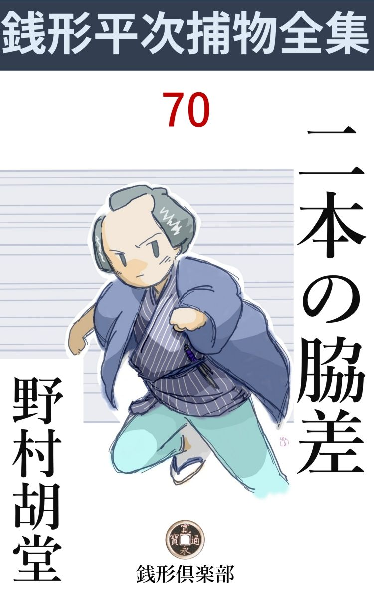
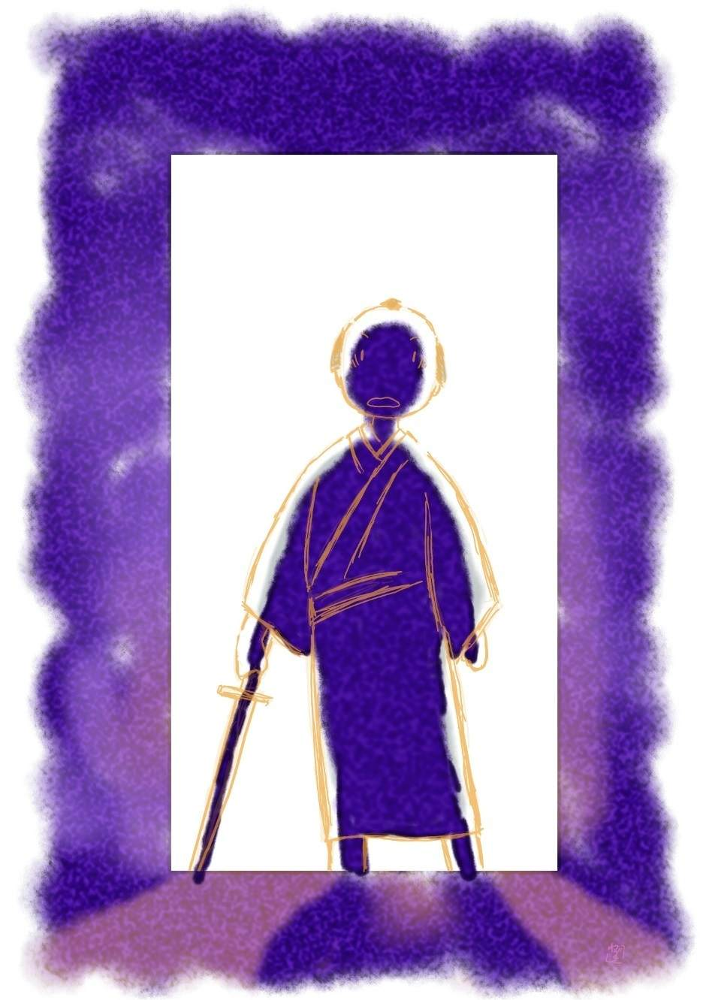

| 二本の脇差: 銭形平次捕物全集第70話 (銭形倶楽部) | |
| 野村胡堂 | |
| ZENIGATA CLUB (2018) | |

一
「親分、大変なものを拾って来ましたぜ」
八五郎のガラッ八は、拇指 を蝮 にして、自分の肩越しに入口の方を指しながら、日本一の突き詰めた顔をするのでした。
「何だ、八、小判か、銭 か」
銭形の平次は置 炬燵 に尻を突込んで黄表紙 を拾い読みしていたのです。
「そんな物じゃねえ、人間ですよ、親分」
ガラッ八の真剣さ。
「夜 鷹 なんか拾って来やがると、勘弁しねえよ。薪 雑 棒 で向う脛 をかっ払って、西の海へ叩き込んでやるから」
荒っぽいことを言いながらも、平次はニヤリニヤリと笑って居るのでした。
「そんな代物 とは訳が違う。ね、親分、ちょっと逢ってやっておくんなさい。永代から身を投げそうにして居るのを、一生懸命宥 めすかして、此処まで伴れて来たんじゃありませんか」
「女か、男か」
「両方で」
「何？」
「相対死 （心中）のやり損ねですよ、親分」
「つまらねえものを拾って来やがったものじゃないか、そいつが知れると、日本橋の袂 に曝 される代物だぜ」
心中のやり損ねは日本橋の高札場の下に三日も生 恥 を曝された時代です。
「日本橋の高札場なら我慢も出来るが、鈴が森の処刑 台 に曝されかけているんだそうで」
「何だと？ 八」
「こいつは拾いものでしょう」
「フーム」
平次は炬燵から這い出しました。奥も入口も狭い家、膝行 寄 って、いきなり障子を開けて見ると、サッと路地を吹き抜く風が、まともに平次の額 を叩きますが、入口の格子は銀鼠色に月光に開け放たれたまま、其処には心中の仕損ねどころか、季節物の恋 猫 の片割れも見えません。
「八、誰もいねえぜ」
「そんな筈はないんだが------」
平次の後ろから八五郎、格子の外を月に透 して仰天しました。
「あッ、居ねえ」
「手前 、永代から水死人の幽霊でも拾って来たんじゃあるまいね」
平次の声は少し怪談調子になりました。
「脅 かしちゃいけねえ、確かに足は二本ずつありましたよ」
「怪物 は足位融通 して来るよ、------その辺の畳が濡れて居るかも知れねえ」
「親分」
八五郎も蒼 くなりましたが、それより驚いたのは、お勝手元で働いて居た若い女房のお静でした。思わずキャッと悲鳴をあげると、濡れた手も拭かずに茶の間へ飛込んで来たのです。
「何て騒ぎをするんだい。幽霊よりお前の声の方が余っ程虫の毒だぜ」
平次はもうケロリとして笑っております。
「だって怖い話をするんですもの、私はもう------」
お静は胸を押えて居りました。
「親分が悪いや。つまらねえ事を言って、脅かすんだもの。畳なんか濡れているものですか、------心中仕損ねの二人が、此処まではあっし と一緒に来たが、銭形の親分の家と聞かされて、驚いて逃げ出したんですよ、馬鹿馬鹿しい」
ガラッ八はようやく常識を 取戻すと、二人の人間の紛失に理由を付けました。
「それほど先が見えるなら、何だって格子の中へ入れてから、俺を呼出さなかったんだ。話の様子じゃ、大分こんがらかった筋のようじゃないか」
「驚いたね、親分。まさか心中の仕損ねが、逃げ出そうとは思いませんよ」
「相手の素姓が判っているのか」
「嘘か本当か知らないが、一と通りのことは訊きましたよ」
「そんなら、あわてるにも及ぶめえ、ここで経緯 を話して見な」
と平次。
「そんな事をしているうちに、また心中のやり直しをしませんか、親分」
「永代から此処まで来るうちに、寒さが骨身に徹 えるよ。もう一度ドンブリやらかす気にはなるめえ、北風がいい意見だよ」
「ヘエ------」
「外の理由 があるならとにかく、相対死にの仕直しをやらかす陽気じゃねえ、大 概 大丈夫だろう」
と平次は呑込兼ねたガラッ八の為に註 を入れました。
「でしょうか」
「死にたがっていたのは男かい、女かい」
「女の方で」
「男の方は」
「あまり気の進まない様子でしたよ」
「それじゃ大丈夫だ、男が死ぬ気になると、女を引 摺 って行くが------」
「ヘエ------」
「ところで、二人は何処の誰だったんだ」
「坂本町の丸屋の娘と、町内の専 次 とか言う若い男で、建 具 屋 の息子だそうで」
「何？ 丸屋？ あの日本橋の坂本町のか？ そいつは大変だ、ゆうべ女主人のお米が殺されたじゃないか」
「その養 い娘のお夏が、青物町の久三郎親分に親殺しの疑いで縛 られそうになって飛出したんだって言いましたよ」
「行って見よう、八、話は歩きながらでも聴ける」
平次は煙草入を腰に、------夜風の寒い路地へもう飛出して居りました。
「待って下さい、親分」
続く八五郎、------そんな事には馴れたお静ですが、この晩ばかりは泣き出しそうな顔で二人を見送って居ります。------万一畳が濡 れて居たらどうしよう------そんな事を考えて居たのでしょう。
二
話は一と晩前の事件に戻ります。
日本橋坂本町に、二十年前に死んだ夫の仕事を承 け継 いで、大きな一代身上を築き上げた、女金貸の丸屋お米というのが住んで居りました。
脂切 って、精力的で、一寸 見は四十七八でしたが、------もうすぐ五十五だから------と口 癖 のように言っていたのを見ると、多分五十四だったでしょう。とにもかくにも、自分の歳のサバを読むような、生 優 しい女ではなく、冷酷で押が強くて聰明 で、強欲で、高利貸に生れ付いたような、逞 しい心の持主でした。
そのお米が、あまり立派でない------実用一点張の殺風景な二階で、一刀の下 に刺殺されていたのを、お米の遠縁で、二三年前から居候 している茂七という三十男が見付けたのです。
ところで、その見付けようがまた、恐しく変って居りました。ガラッ八の言葉で説明すると、
「居候の茂七が、あんまりひどい小言を食 った上、その晩にも追出されそうなので、お米を脅かすつもりかなんかで、質物の脇差のうちから、一番よく光る大ナマクラを持出し、そいつを抜 身 のままブラ下げて、二階で帳合をしているお米の部屋へ飛込むと、------肝 腎 のお米は一と足先に入った曲者に刺殺されて居たんだそうです」
「成程そいつは変っているな、------曲者は何うしたんだ」
「茂七は逃げて行く曲者の後ろ姿をチラリと見た------と言いますが、二階は四室もある上、廊下に灯りが無いから、男か女か、それさえ判らなかったそうで」
「青物町の久三郎兄哥 は、茂七を挙げなかったのかい」
「茂七の持っていた脇差には毛程の汚 点 もないが、お米婆さんの傷は、左肩胛骨 の下から、胸まで通るほどの凄 い突きで、茂七の持っていた、大ナマクラなんかじゃ、綿入一枚通すのもむずかしいと言うんだそうですよ」
「フーム」
「青物町の親分は、一番先に養い娘のお夏に目を付けました。お夏はお米の姪 で、手塩にかけて育てた娘ですが、近頃町内の建具屋の伜の専次と出来てしまい、人橋を架 けて、嫁にくれるか、婿に入るか、何方でも構わないから添わせてくれと申込んだが、お米婆アいっかな聴き容れません。母親の目を盗んで、大それた約束なんかをする相手とは、私の眼の玉の黒いうちは、一緒にすることはならねえと」
「------」
「お米婆さんの眼の玉が白くなると、下手人の疑いは一番先にお夏に掛かる道理じゃありませんか」
「専次は？」
「その晩尺 八の復習で、丸屋の隣の竹 支 斎 の家で、宵から鼻の下を長くして尺八を吹いて居たんだそうで、人なんか殺す暇のなかったのは、二十人もの人が見張って居ます」
「で？」
「お夏が縛られそうになると、専次と二人で飛出してしまいました。縛られる位なら死んだ方がいいとか何とかで、気の進まない男を口 説 いて、永代まで来たところを、あっし に見付かったんで------」
ガラッ八は、ありったけの聞込みをさらけ出して、耳の後ろをポリポリと掻きました。その大事な二人、心中仕損ねのお夏専次を逃してしまったのは、何としても面目が相立ちません。
これだけの説明を聴くうちに、平次と八五郎の足は、神田から日本橋へ、一気に駈け付けて居りました。もう戌刻 半過ぎでしょうが、しもたや造りながら、店構えの大きい丸屋は、火の消えたような静寂のうちに、何となく不気味を押し潰したようなザワめきを孕 んでおります。
三
「八、あれがお夏とか言う娘じゃないか」
平次は丸屋の向う側、もう大戸を閉めた店先の隈 を指しました。
「あッ、有雜てえ、死なずに居ましたよ、親分」
八五郎は飛付くように、脅 え切った娘の方へ進みます。その退路を絶つように平次。
「おどかすなよ、八、すっかり顫え上っているようだ」
静かに娘の顔を差 のぞきます。
「何だって親分の家の前から逃出したんだ、飛んだ心配をしたぜ」
とガラッ八は、少し噛み付きそうです。
「済みません」
お夏の消えも入りたい風情 を、平次はあわれに見やりました。店先の隈を出ると、満面に青白い月を浴びて、十八娘の可愛らしさが、この上もなく効果的に見えるのでした。
「まア、いいやな、久三郎兄哥の手を逃れてこの平次の手に捕まっちゃたまるまいと思ったろう------でも、ここへ戻ったのは感心だ。万事は俺が呑込んでいるから、一緒に入るがいい」
お夏は僅かにホッとした様子です。若さにも美しさにも似ぬ粗末な身 扮 ですが、全身から発散する魅力は、反 って楚々 として人を動かします。
「専次はどうした」
「一緒に来るというのを、------それでは反 って具合が悪いから、そこで別れました」
お夏の声はともすれば恐怖に顫えるのでした。
「それも宜かろう、さア、万事は俺に任せるんだぜ、解ったか」
「ハイ」
平次を先に、お夏を中に挾 んで、ガラッ八が殿 を勤め、丸屋の、不安と疑 惧 とを包む空気の中へ入って行きました。
「御免よ」
「何誰 で？ 今晩は取込みがございますが------」
番頭らしい実体な四十男が顔を出しました。
「神田の平次だが------」
「あ、銭形の親分さん」
番頭は立竦 みました。その後ろからヌッと顔を出したのは四十五六の小作りながら鋭い感じの男。
「何だ何だ、お、銭形の兄哥じゃないか。大層良い鼻だね」
青物町の久三郎です。平次の姿を見ると、競争意識が一ペんに内 訌 して、サッと顔を曇らせると言った男です。
「そんなわけじゃねえ、------永代から身投をしかけた娘があったから、危ないところで止めて、送り届けて来たまでさ」
「えッ、その娘が、------あの、身投をしたというのかい」
「何だか知らねえが、縛 られる位なら身を投げて死んだ方がいいと言う料簡だ。若い娘というものは、兄哥 の前だが附合いにくいね」
平次はさり気なく言いながらもこの事件に少 からぬ興味を持っている様子です。
「急に見えなくなるから、飛んだ心配をしたぜ」
久三郎は照臭そうに、お夏の機嫌をとりました。
「ところで、修業の為だ。ちょいと現場を覗かしちゃ貰えまいか」
と平次。
「あ、いいとも、どうせ銭形の兄哥の知恵も借りなきゃなるまい。殺しがあってから、まる一日一と晩経つが、まるっきり眼鼻が付かねえ」
久三郎は少し苦い顔をしましたが、口前だけは器用に、平次の望みを容れました。飛んだ目違いで、お夏を狙ったばかりに、危うく娘一人を殺し損ねたのが、さすがに老 巧 な御用聞の気を挫 いたのでしょう。
「お葬式 はまだかい」
と平次。
「遠い親類があるそうで、明日 もむずかしかろうと言うよ。お通夜の衆に遠慮して貰って、仏様を見るか」
「いや、それには及ぶまい。左肩胛骨 の下から、胸まで突き差す手際じゃ、娘の仕事でないことは判り切って居るから」
久三郎はもういちど苦い顔をしました。奥の一と間に集まったお通夜の衆は、世間体を憚 かって、本当の近親ばかり、平次はその中に交 って、百万遍の数 珠 を繰ったり、線香を上げたり、神妙らしい四半刻を過しました。それを吹き晒 しの縁側から見て居る信心気のないガラッ八の退屈さ------。
四
「ちょいと、親分さん」
「誰だい」
ガラッ八の八五郎は、好い心持に後ろを振り返りました。こんな調子で呼ばれるのは、あまり例のないことでもあり、それに、その声の仇 っぽい美しさは、八五郎の五臓六腑に沁み渡る心持だったのです。
「茂七さんは人なんか殺せる方じゃありません。どんな事を言っても、あの人ばかりは疑わないで下さいな」
「そりゃ一体どういうわけだい」
ガラッ八は闇を透 かしました。外は美しい月夜ですが、そのせいで建物の蔭になる中庭の暗さは一倍です。
「頼みましたよ、親分さん、悪者は外から入って、お神さんを殺して逃げたに違いありません、------その証拠は------」
仇っぽい声はそれっ切り尻 切 蜻蛉 になりました。誰か不意にやって来た人影に驚かされた様子です。
「チェッ、勝手なことを言うぜ」
ガラッ八は大きい舌鼓 を一つ、クルリと元の灯の方へ顔を向けました。
「八、今のは誰だ」
「あ、親分」
いつの間にやら平次が、八五郎の後ろに立って、ニヤリとしていたのです。
「飛んだ邪魔をしたようだな------大層仇っぽい声がしたが、あれは誰だい」
「それが解りませんよ、------何しろ中庭は真っ暗だ、------女には違いないが、新 造 か、年増か、綺麗か醜 いかの見当も付かねえ」
「何を言ったんだ」
「茂七は人を殺すような男じゃないから、疑わないようにしてくれと言うんで、------悪者は外から入ったに相違ないとも言いましたよ」
「すると下手人は矢っ張りこの家の者かな」
平次は裏の裏を考えて居ました。
「とにかく、変な女ですね。あの声を聞くと、ぽんのくぼへ飴 を垂 らされるような、------鼻の頭を羽毛で撫でられるような、背筋がモゾモゾするような心持になりますよ」
それ以上は二人にも解りません。
青物町の久三郎を誘 って、お米が殺されたという二階も見ましたが、階段が裏表にある上、部屋が並んで四つもある有様で、曲者に取っては四通 八達 の間取りです。
「これでは------」
平次もさすがに匙 を投げました。
お米の刺された部屋は、畳の上の血潮もそのまま、何となくゆうぺの無気味な情景を思い起させます。
「八、ここヘ一人ずつ呼んでくれないか、最初は一番怪しい茂七だ」
平次は久三郎の無言の承諾 を得ると、さっそく銭形流の調べに取りかかります。
「ヘエ------」
八五郎は通夜の席から、そっと居候 の茂七を呼出して来ました。
「親分さん、御用だそうで------」
平次と久三郎へ等分に挨拶したのは、三十前後の恰幅 の良い男、殺されたお米には遠縁に当るそうで、居候と言っても、何となく寛濶な感じのする態度が、考えようでは横着らしくもあります。
「お前と殺されたお神さんとは、何んな筋合になるんだ」
平次は斯 う言った平凡なことから始めました。
「私の叔父の従弟 の、その嫁がお米さんで」
「さア解らない」
「まア、他人のようなものですよ」
「近頃、お神さんとの仲が面白くなかったそうだね」
「ヘエ、------まア、私も悪いには違いありませんが、あんまり因 業 だから、ツイ、面白くないこともありました。昨日も小遣いがかかり過ぎるからと散々の大小言で、二た言三言弁 解 をすると、今にも出て行け------と嵩 にかかって呶鳴り散らすじゃありませんか」
「それだけか」
「それだけかと仰しゃっても、私に取っちゃそれだけじゃ済みません。三年越 店を手伝って、奉公人並に働き乍 ら、一文も給金を貰ったことのない私が、たまたま歯磨を使ったのが贅 だとか、手拭を買ったのが生意気だと言われちゃ、我慢がなり兼ねます。今晩直 ぐ出て行け------と言うのが、あんまり癪 にさわるから、質 で唯 見たいに取った脇差のうちから、一番光るのを持出して、脅 かしのつもりで二階へ登って行くと------」
「------」
茂七はさすがにゴクリと固唾 を呑みます。
「お神さんの部屋から飛出して、向うの裏 梯子 の方へ行く者があります」
「男か、女か」
「それが判りません。何しろ江戸一番の握 り拳 で、二階廊下が危ないのを承知の上で、どうしても有 明 を点 けさせない人です」
「------？」
「何心なく部屋へ入ると、------駑いたことに、お神さんは、行燈の前に俯 向 になって死んでいるじゃありませんか」

「どうして死んでいると解った」
「其処 中が血だらけで」
「着物へ吸い取られて、大した血ではなかったと言うが」
「でも、一と眼で解りましたよ、------あんまりびっくりして、思わず大きな声を出すと、番頭さんが飛んで来ました」
「それから」
「お咲さんも来たようです」
「誰だい、お咲さんと言うのは」
「番頭の和助 さんのお神さんで、------尤も年は少し上だそうですが」
「それから」
「女房や、小僧も飛んで来ました」
「お夏は？」
「見えなかったようです。尤もしばらく経ってから来ましたが、何でも気分が悪くて、夕飯の後ですぐ寝てしまったそうで」
「それっ切りか」
「ヘエ------」
茂七は何も彼 も言ってしまった安心さに、緊張のうちにもほっとした樣子です。
五
次は番頭の和助、四十男ですが、日蔭の冬瓜 のように青白くて、せいぜい三十五六にしか見えません。妙に華 奢 で、滑らかで、金貸の番頭には不向らしく見えますが、案外こんな人柄のが、一番強 かな魂を持っているのでしょう。
お米の手足になって、ずいぶん残酷 な取立てをすると言う評判を取った人間です。
「親分さん、御苦労棣で」
「番頭さん、幾つだい」
平次は妙な事から訊き始めました。
「本年は前厄でございます」
「大層若く見えるね」
「御冗談で」
「ところで、お神さんが殺された時は、何をして居たえ」
「階下 に居りました。明日 の取立てのことを考えて居たところで」
「傍に誰も居なかったのか」
「生憎 誰も居りませんでした。こんな広い家ですから、六人や七人住んでいても滅多に顔を合せることもございません。それに亡くなった主人は、無駄な灯 を点けるのが大嫌いで、夜分などは空家のようです。不自由と言えば不自由ですが、どうせ抵 当 流れに取った家で、買手が付かないと、越すわけにも参りません、ヘエ------」
和助は支配人らしく、いろいろと気を配ったことを言います。
「番頭さんの給料は」
「通って年に十両の約束でございました。が取立ての具合では少々の歩合もありました。尤も女房がこの家へ住込まして貰ってからは、それが七両に減 りましたが------」
「大層少ないようだが」
「ヘエ------」
「お前のお神さんは手伝っていたわけじゃないのか」
「お手伝いも致しましたが------」
女主人お米の徹底した吝嗇振 りはさすがに和助の口から言い兼ねた様子です。
「主人のお米さんが死ねば、この身上は誰のものになるのだえ」
「お夏さんでございましょう」
「お前は？」
「私はお暇 になるのを覚悟して居ります」
「すると、主人が殺されて困るのは、番頭さん一人と言うことになるね」
平次の質問は妙に皮肉な調子でした。
「いえ、私も少しばかり給金の前借りがごさいますし、------誠に申 憎いことですが、親分さんの方の手で知れると面 倒 ですから思い切って申し上げますが、------お神さんには内証で、少しばかり費い込んだ金もございます」
「いくらだ」
「前借りは五十両ほど------私の五年の給料でございます。それに費い込んだのは、二三百両も御座いましょうか」
「あまり少しばかりではないぜ、番頭さん」
「ヘエ------でも二十年も勤めて、七両や十両の給金では、私も世帯が持てません」
「フーム」
和助の真意は解りませんが、女主人お米を殺す動機だけは確かに持って居そうです。
その次に呼出したのは和助の女房のお咲、これは和助より三つ四つ年上なのと、すっかり世 帯 崩 れの女房振りで、亭主とは十 歳 位違いそうに見えます。十七八貫もあろうと思う、煮 締 めたふろふき のような水っぽい女。
「------」
何にも言わずに、白い眼で平次と久三郎を見上げながら、小 刻 みに貧乏揺ぎをして居るのでした。
「お咲さんと言ったね」
「へエ------」
「お神さんの殺されたことで、何か気の付いたことはないかえ」
「何にもありませんよ、親分さん方」
男のような太い声です。
「和助にろくな給料を出さなかったそうだから、お前もお神さんを怨 んで居たろうな」
「へエ------、でも締り屋で通った方ですから、三度の物にあり付けば、我慢が出来ないこともありませんよ」
貪乏摺れのした女房らしい諦観 です。
「お前は給料無しで働いたそうじゃないか」
「その代り、役徳もありましたよ」
「はて？」
「お神さんからお金を借りたい人は、みんな私ども夫婦の御機嫌を取ったんですもの」
「成程な」
平次は妙な覚りを開きました。
六
養い娘のお夏も、一応二階の部屋へ呼込まれましたが、これは何を訊いても、最初は筋の通った事を一つも言いません。
「専次と一緒になるのを、どうしてもお神さんが聴かなかったそうじゃないか」
「------」
「何うするつもりだったえ」
「この家を出るつもりでした」
僅かにあげた顔には、娘らしい純情が輝 きます。こんなのが、思い詰めたら、心中もするだろうし、人を殺す気になるかも知れません。
それにしても、不思議に人を牽 付ける美しさでした。大して綺麗というではありませんが、------これは多分、娘の純情的な性格から来る美しさかも知れません。
「お神さんが殺されていた時は、どこに居たんだ」
「少し気分が悪くて、横になって居ました、階 下 の、私の部屋で------」
「灯りは？」
「点 けません」
「専次のことで、もういちど相談するつもりで、二階へ行った筈だが------」
「------」
「先刻風呂場を覗いて見ると、釜の中に赤い鼻緒 の草履が、少し燃え残ってあったが、------その草履の裏に、何が付いていたか、お前は知って居た筈だ」
「------」
お夏は青くなりました。
「皆んな言ってしまった方がいいよ、------お神さんを殺したのを、お前だとは決して思わない」
平次の言葉に、仰天したのは、お夏よりも反って青物町の久三郎でした。それほどの証拠がありながら、お夏の無実を証明するような、平次の言葉が気にくわなかったのです。
「では、皆んな申します。------あの晩、私は専次さんのことをもう一度お母さんにお願するつもりで、裏 梯子 をそっと登って、二階の部屋へ行きました、お母さんが許して下さらないと決れば、その晩のうちに、専次さんと一緒にこの家を逃出して、木 更 津 の叔父さんのところへ行く筈だったのです」
「------」
お夏の話は、思いも寄らぬものでした。
「部屋の障子を開けて、------私はよく声を出さなかったと思います。お母さんは脇 差 を背中に突っ立てたまま、行燈の前に俯 向 になって居るじゃありませんか」
「脇差はたしかに背中に立って居たね」
「え、ギラギラしてよく見えました。------私はあんまりびっくりして、思わす飛込んで抱き起そうとしましたが、もうすっかり死んで居るのに気がついて、怖くなって立ち竦 むと、表梯子をミシリミシリと鳴らして、誰か登って来た様子です」
「茂七だろう」
「誰だか解りませんが、------私も姿を見られては悪いと思って、何うしてそんな気になったか、今から考えると少しも解りませんが、------裏梯子から転げるように飛降りました」
「茂七が二階で騒いだのは、それから直ぐか」
「いえ、私が自分の部屋へ帰って、行燈に灯を入れて見ると、畳の上に血が付いて居るではありませんか、うっかり血の付いた草履を穿いたまま、飛込んだのです。------何を考える遑 もなく、雑巾でその畳と廊下を拭いて、草履を風呂場へ持って行って、まだ火の残っている釜の中へ入れると、------その時二階から茂七さんの声が聞えて来ました」
お夏の説明は次第に事件に明るさを添えて行きます。
「茂七は何と言った」
「大変だ、皆んな来てくれ、お神さんが殺されて居る------と言ったようでした」
「大層文句が多いようだが、問違いはあるまいね」
「え」
お夏は若い記憶力 に自信を持って居そうです。
「もう一つ訊くが、その晩、専次が来なかったのか」
「来たかも知れませんが、あんまりびっくりして、合図を聞 漏 してしまいました」
「合図は」
「口笛 で------でも昨夜 は、お隣に尺八の復習 がありましたから、口笛が紛 れて聞えなかったのかも知れません」
「お前と専次の逢引 を、家の者は誰も知らないのか」
「知って居て知らん顔をしているのかもわかりません」
これがお夏から聴き出した全部ですが、事件の真相は、次第に解って来るような気がします。お夏の言ったことを条件書 にすると、------
少なくとも、死体には最初脇差を突き刺したままであったこと、『その血刀を誰かが引抜いて、何処かへ隠してしまったこと』、『ちょうどその時刻に、専次が来る筈であったこと』、それから、『お夏と入れ違いに二階へ登った人間のあること』、『茂七がピカピカする脇差を持って、二階で騒ぎ出したのは、それからかなり経った後であること』------以上の通りになるわけです。
最後に下女と小僧を呼出して調べましたが、これは灯のない店とお勝手で居睡 りしていて何にも知らず、唯変ったことは、
「お神さんは、来年は五十五だと言うのに、近頃は大変若造りで、そっと白粉を付けたり、髪を染めたり、思い切って派 手 なものを着るようになりましたよ」
これは下女の言葉です。六十の方へ近くなる老女の化粧が、女同士の下女に変な眼で見られるのはあまりにも当然のことでした。
「八、何刻 だろう」
平次はフト顔を挙げました。何処かの鐘が鳴ります。
「亥 刻 半 、いや子刻 でしょうよ」
「夜中だな、が、岡っ引に時刻はない、もう一と働きしようか」
「一と働きでも二た働きでもやりますよ」
「それじゃ来い、夜の明ける前に片付けよう」
平次は月を踏んで飛出しました。続くガラッ八、青物町の久三郎、すっかり平次にリードされて、もう縄張も年の功 も忘れてしまった様子です。
「何処へ？ 親分」
「丸屋で訊いちゃまずいから、黙って飛出したが、専次の家はどこだか判らないが、自身番へつれて来てくれ」
「合点」
ガラッ八は飛びました。
七
それから間もなく、建具 屋 の専次は、八五郎に連れ出されて、真夜中の自身番に待って居る、平次の前へ眠むそうな顔を持って来ました。
「お前は専次か」
「ヘエ------」
挙げた顔、少し面喰らってポーッとして居ますが、二十二三の色の浅黒い小意気な男で、江戸の町娘のお夏が夢中になりそうな型です。
「あの晩のことをみんな言って了 え」
平次は高 飛車 に極め付けました。
「ヘエ------」
「白ばっくれちゃいけねえ。手前が隠し立てすると、お夏の首に縄が掛かるぞ」
「------」
平次に脅 かされながらも、専次の首は深々と垂れるばかり、一言も物を言う様子はありません。
「八」
「ヘエ」
「耳を貸せ」
平次は何やら八五郎の耳に囁くと、
「やって見ましょう、待って居て下さい」
ガラッ八は猟犬のように飛出しました。
それからしばらく、平次と専次の睨み合いが続きます。
「どうだ、証拠を突付けられてからじゃ、手前 の損だぞ、今のうちに、皆んなブチまけたらどうだ」
「------」
「俺は何も彼も知って居る。尺八の復習 から抜出して、何処へ行った」
平次の問を空耳 に聞いて、専次は一言の応も ありません。
「親分、あった、これでしょう」
飛んで来たのは、ガラッ八でした。平次の手へ渡したのは、尺八を入れた鬱 金 木 綿 の袋。
「これだ、どれ、灯を 貸してくれ」
行燈の側へ持って行って、紐を解くと、中から出て来たのは、籐を巻いた尺八が一管。
「あッ、血？」
ガラッ八の驚いたのも無理はありません。尺八の籐に喰い込んで、微かながら斑 々 と残るのは紛 れもなく古い血潮の痕 だったのです。
「専次、これでも黙っている気か、血刀を誰の手から受取って、この袋の中へ隠した」
「------」
「口笛を吹いて合図した時、お前に血刀を渡した者がある筈だ、------お夏ではあるまい。お夏が見た時は、刀は死骸に突っ立っていた筈だ。お夏はそれを抜いてお前に渡す筈はない、お夏がお前に血刀を渡したら、下手人は間違いもなくお夏だが、血刀を渡したのが他の者なら、下手人はお夏でない」
平次の推理 が手厳しいうちにも、専次を安心に導 く様子でした。
「------」
「俺は最初、下手人はお前かも知れないと思った。お夏が刀を隠したならお前が下手人だ」
「------」
「お前が下手人なら、一度お米を刺して置いて、また刀を取りにあの家へ入る筈はない」
「------」
「下手人は、お前でも、お夏でもない。これは皆んなお前やお夏に疑いをかける細工だ」
平次の推理はしだいに専次の頑固 な心を動かして行きました。
「本当でしょうか、親分、お夏に疑いは掛からないでしょうか」
「大丈夫だ、俺が引受ける、この平次がお夏を引受ける、------血の付いた脇差をお前に渡したのは誰だ、言ってくれ」
「茂七ですよ、親分」
「何？」
「私が口笛の合図をすると、裏口へ茂七が出て来て、------お夏が間違いを起した、親殺しにされちゃ気の毒だから、この血刀を何処かへ隠してくれ、あとの始末は俺が引受けるから------と言って、生 血 の付いた脇差を渡しました。あんまり驚いて口も利けなかったので、そのまま尺八と一緒に袋へ入れて、しばらく皆んなの相手をして時を過し、そっと脱 出 して脇差は江戸橋の下へ投り込み、尺八もよく洗ったつもりですが------」
「何だって、その翌る晩心中する気になったんだ」
と平次。
「お夏が縛られるかも知れないと言って、私のところへ来たので、てっきり、下手人はお夏と思い込み、永代まで行って飛込むつもりでしたが、八五郎親分に止められて------」
「その先は判った」
平次はそこまで聴くと、専次を帰して物思いに沈みます。
「親分、下手人は茂七に決ったじゃありませんか、すぐ手を廻しましょう」
「いや」
平次は首を振ります。
「青物町の親分は、飛んで行きましたよ」
ガラッ八は此 手柄を、久三郎に横取りされるのが心外そうでした。
「放って置け、------茂七が下手人なら、何だって、もう一本の新しい脇差なんか抜いて、死体のある部屋へ二度目に飛込んだんだ」
「誤魔化 しだ、親分、茂七の芝居じゃありませんか」
「いや、自分で殺しておいて、血刀を専次に隠させ、新しいピカピカする脇差を抜いて、もういちど死骸のある部屋へ入るのは、少し細工過ぎると思わないか」
「------」
「それに、あれは腹の良い男だ、和 助 と違って------」
「和助とどこが違っているんで？ 親分」
「もう一度丸屋へ行って見よう」
平次はガラッ八を従 えて、夜半過ぎの街を、丸屋へ引返しました。通夜があるにしても、家の中が宵とは比べものにならぬほどザワめくのは、青物町の久三郎が、茂七を縛った為でしょう。
八
「番頭さん．少し訊き残したことがあるが」
「ヘエ------」
和助は恐る恐る平次に導 かれて、人気のない部屋に入りました。
「他じゃない、番頭さんの配偶 ------お咲さんは確か、元立派な芸人だった筈だね」
「立派な芸人と申すほどじゃこさいませんが、若い時分に旅の女役者だったことがあります。三十過ぎて水仕事をするようになってからはあの通り女角力 のように肥ってしまいましたが、あれでも若い時が、ありましたよ、ヘエ」
和助は苦笑いをするのでした。この男の華奢 なのに比べて、お咲はまた、あまりにも醜 く肥っております。
「もう一つ、これは少し言い憎いことだが、番頭さんはこの一年ばかり、主人のお米さんに可愛がられ過ぎたようだね」
「------」
和助は黙って俯 向 いてしまいました。
「それを見張るつもりで、番頭さんの配偶 のお咲さんが、世帯を畳んでこの家へ入り込んで来たのだろう。主人のお米さんはそれが気に入らなくて、お咲さんを唯コキ使った上、番頭さんの給金まで減 した。食 扶 持 を差引くつもりだったのだね」
「------」
「返事がなければ、そう思って差支えはあるまい」
和助の萎 れる姿を見て、平次は立上がります。
「親分、これからどうなるんで」
ガラッ八はぼんやりその後に従いました。
「これっ切りさ------茂七に逢って、たった一と言訊きさえすればいい」
平次は久三郎を追ってもう一度番所へ、暁近い街を行きました。
「銭形の、お蔭で下手人を縛ったよ。まだ白状はしないが、なアに、石を抱かせるほどのことはあるまい」
仮縄 を掛けた茂七を引据えて、青物町の久三郎はこんな事を言うのです。
「青物町の、俺に一つ二つ訊かしてくれ、茂七でなきゃ知らないことがあるんだ」
「あ、いいとも」
久三郎の寛大 さを可笑 しく見て、平次は茂七の側に寄りました。
「茂七、つまらない我慢は止した方がいいぜ、------お前はお夏を庇 っているようだが、下手人はお夏なんかじゃないよ」
「------」
平次の言葉を不思議そうに見上げる茂七です。
「あの晩、お前がお米にねじ込むつもりで二階へ行くと、お米の部屋から、飛出して来るお夏の後ろ姿を月明りで見た筈だ、------廊下に灯 はないが、高窓から、月がよく射している------昨夜は月がよかった」
「------」
「部屋に入って見ると、お米は殺されて居る、お前はてっきりお夏の仕 業 だと思った、------無理もない話さ。お前はお夏を庇ってやる気で、死骸の背中から刀を抜いて、何処かへ隠そうと思って外へ出ると、専次がお夏と逢 曳 するつもりで、口笛で裏口から合図をした、------お前はその血刀を専次に隠させる気になった心持もよく解るよ------専次はお夏の為ならどんな事でもする」
「------」
茂七は初めて平次の顔を仰ぎました。何やら疑惑が、その眼の中に動きます。
「それから引返してお前は考えた筈だ。あの家の中で女主人のお米が殺されると、疑いは一番先に、その日大喧嘩をしたお前にかかって来る、その疑いを解くためには、下手人のお夏を引渡すか------それはお前に出来なかった、お前は心の中で本当にお夏を可愛がっている、------無理もないよ、お夏は誰にでも可愛がられる娘だ」
「------」
「が、自分で罪を引受ける気にもなれない、------思い付いたのはあの逆手 だ、大ナマクラのギラギラする脇差を持出し、二階へ登って大声を出した。その方が反って疑われずに済むと思ったのだろう、------そう考えると、お夏が二階でお前に逢ってから、お前の騒ぐ声を聴くまで、かなり間があったというのも觧って来る」
平次の説明は寸毫 の隙もありません。
「下手人は、親分、本当の下手人は誰で？」
茂七は初めて口を開きました。救われた色が、活々 とその眼に新しい輝きを添えます。
「亭主とお米の仲を疑ったお咲だよ」
「えッ」
茂七よりも、ガラッ八と久三郎の方が、どんなに驚いたことでしょう。
「茂七を下手人にするのが気の毒になって、芝居風な仇 っぽい台詞 で、中庭の闇から八を口説いたのはあの女さ、あれでも昔は役者だ」
「------」
「主人のお米に怨みは山程あった筈だ。亭主の和助の費い込みは露見しかけていたし、自分は奉公人よりもひどくコキ使われて一文の給金も貰わなかった」
「------」
「お米を刺した脇差は多分和助のだろう。抜身 を持出して、裏梯子から登り、お米の背後から一と思いに刺し、下へ降りたところへお夏が行ったのだ、------脇差の鞘 が、多分和助の荷物か、あの女の荷物の中にあるだろう。それとも焼いてしまったかも知れない、土 竃 と風呂場をもう一度捜すことだ、燃さし位はあるだろう」
「親分、夜の明けないうちに、行ってしょっ 引きましょう」
ガラッ八は立上がりました。
「いや、もう少し待つ方がいい、------あれ、丸屋の小僧が飛んで米るじゃないか」
平次の指した暁の街を、小僧は前のめりになって飛んで来るのです。
「た、大変、お咲さんが」
「逃げたか、それとも死んだか」
「物置で頸 を縊 って------」
「それでいい」
平次は深々とうなずきました。
「親分、知って居たんで？」
とガラッ八。
「知っていたわけじゃないが、俺が和助からいろいろの事を訊き出すのを、あの女は襖 の蔭で立ち聞きして居たよ。逃げられると少し困ると思ったが、------矢張り根が悪人じゃなかったんだ」
平次は悲しそうでした。そう言う息は白々と見えて、次第に明ける冬の朝、------ガラッ八はそっと襟をかき合せます。
（編注）
作品中には、身体の障害や人権にかかわる、差別的な語句や表現が見られますが、本書が成立した当時の時代背景等が現代とは異なる古典的な文学作品でもあり、著者が故人でもありますので、底本のままとしました。ご理解、ご諒承のほどをお願い申し上げます。
著者---野村胡堂
挿絵---萩 柚月 © 2017
初出---「オール讀物」昭和十二年十二月号 文藝春秋社
底本---「錢形平次捕物全集」第四巻 河出書房 昭和三十一年六月三十日初版
編集・発行 銭形倶楽部